| m=3, n=8, 9  area 2.537+, 2.601+ (Philippe Fondanaiche) | m=4, n=4, 5 area = 2.525+, 2.618+ | m=4, n=6 area = 2.523+ (David W. Cantrell) |
Problem #1. Packing Circles with Two Different Sized Circles
Given positive integers 1<m≤n, we wish to pack m circles of one size and n circles of another size into a unit circle so that the total area of the circles is maximized. What are the maximal area packings for various m and n? The corresponding problem for squares was the problem of the month in April 2000. What are the best solutions for packing circles in a square or squares in a circle?
Problem #2. Covering a Square with Circles of Any Size
The problem of covering a unit square with n circles of equal size has been well studied. You can the best known solutions here. A variant of this problem is to cover a unit square with n circles of any size and minimal combined area. What are the minimal covers for various n? What are the minimal circle covers of an equilateral triangle of length 1?
Problem #3. Packing Discrete Circles on a Square Torus
Say we have circles of diameter d, all centered at half lattice points, packed inside a square torus with side n. If d and n are fixed, how many non-overlapping circles C(n,d) will fit? For each n, C(n,d) is a non-increasing piecewise constant function of d, which can be illustrated by exhibiting the packings at the discontinuities. For example, for n=5, the discontinuities occur for d=1, √2, √5, 2√2, and 5. For each n, can you find the discontinuities of C(n,d), and the value of C(n,d) at those points? It is clear that C(n,1)=n2 and C(n,n)=1 are always discontinuities. What other general formulas are true?
Problem #4. Packing Circles of Radii 1, 2, 3, ... , n in a Circle.
What is the smallest Circle that contains non-overlapping circles of radii 1, 2, 3, ... , n?
Here are the best known two circle packings:
| m=2, n=2 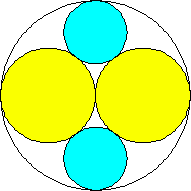 area 13π/18 = 2.268+ | m=2, n=3 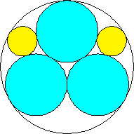 area 2.345+ (David W. Cantrell) | m=2, n=4 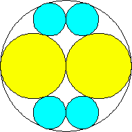 area 3π/4 = 2.356+ |
| m=2, n=5 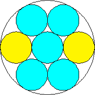 area 7π/9 = 2.443+ (David W. Cantrell) | m=2, n=6 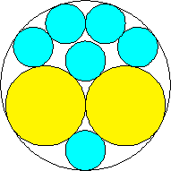 area 2.438+ (David W. Cantrell) | m=3, n=3 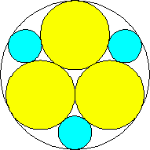 area 2.502+ |
| m=3, n=4 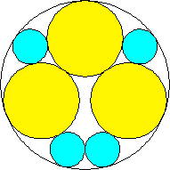 area 2.445+ (David W. Cantrell) | m=3, n=5 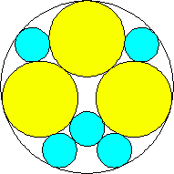 area 2.459+ | m=3, n=6  area 2.537+ (Philippe Fondanaiche) |
| m=3, n=8, 9  area 2.537+, 2.601+ (Philippe Fondanaiche) | m=4, n=4, 5 area = 2.525+, 2.618+ | m=4, n=6 area = 2.523+ (David W. Cantrell) |
| m=4, n=8, 9  area = 2.541+, 2.590+ (Philippe Fondanaiche) | m=5, n=5, 6, 7 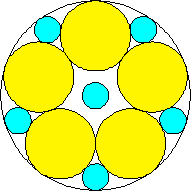 area 2.459+, 2.520+, 2.662+ (David W. Cantrell) |
| m=6, n=6 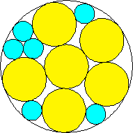 area = 2.531+ (David W. Cantrell) | m=2, 3, 4, 5, 6, n=7 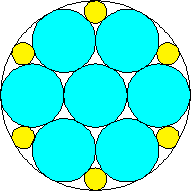 area 2.531+, 2.575+, 2.662+, 2.618+, 2.706+ (David W. Cantrell, Maurizio Morandi) |
Problem #2:
Here are the best known coverings of a square by circles:
| n=1 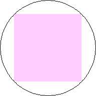 area π/2 = 1.570+ | n=3 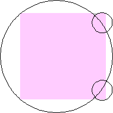 area 1.442+ | n=4 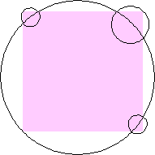 area 1.397+ |
| n=5 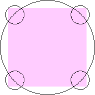 area 5π/12 = 1.309+ | n=6 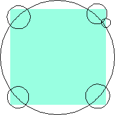 area 1.2965+ (David W. Cantrell) | n=7 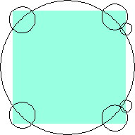 area 1.2813+ (Philippe Fondanaiche) |
| n=8 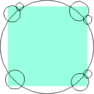 area 1.2687+ (David W. Cantrell) | n=9 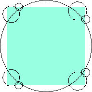 area 1.2558+ (David W. Cantrell) | n=13 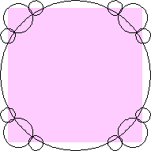 area 1.185+ |
And here are the best known coverings of a equilateral triangle by circles:
| n=1 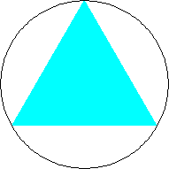 area π/3 = 1.047+ | n=2 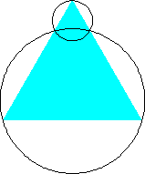 area 7π/24 = .916+ (Hans Melissen) | n=3 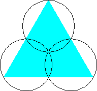 area π/4 = .785+ (Hans Melissen) |
| n=4 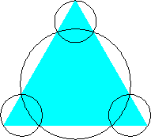 area 5π/24 = .654+ (Hans Melissen) | n=5 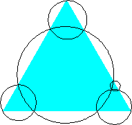 area .644+ (David W. Cantrell) |
| n=6 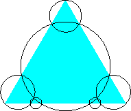 area .630+ (David W. Cantrell) | n=7 area .624+ (David W. Cantrell) |
Problem #3:
Here are the small discontinuities of discrete packings of circles on a torus:
| n=1, d=1 1 circle |
|
|
|
|
|
|
|
|
|
|
Joseph DeVincentis noted that the possible discontinuities are square roots of the sum of two squares of integers, and showed C(n,√2)=n  n/2
n/2  and C(n, n/2 √2)=2 are always discontinuities for n≥4. He also showed that C(2n,2)=n2, but wasn't sure this was a discontinuity.
and C(n, n/2 √2)=2 are always discontinuities for n≥4. He also showed that C(2n,2)=n2, but wasn't sure this was a discontinuity.
Problem #4:
The Al Zimmerman Programming Contest featured this problem. The best results for small n are shown below. Fixed circles are shown in blue, and rattlers are shown in purple.
| 1. | 2. | 3. | ||
| r = 1 Trivial. | r = 3 Trivial. | r = 5 Trivial. |
| 4. | 5. | 6. | ||
| r = 7 Trivial. | r = 9.001397+ Found by Klaus Nagel and Hugo Pfoertner in October 2005. | r = 11.057040+ Found by Fred Mellender in October 2005. |
| 7. | 8. | 9. | ||
| r = 13.462110+ Found by Gerrit de Blaauw in October 2005. | r = 16.221746+ Found by Gerrit de Blaauw in October 2005. | r = 19.233193+ Found by Gerrit de Blaauw in October 2005. |
| 10. | 11. | 12. | ||
| r = 22.000193+ Found by Steve Trevorrow in November 2005. | r = 24.960634+ Found by Gerrit de Blaauw in October 2005. | r = 28.371389+ Found by Steve Trevorrow in November 2005. |
| 13. | 14. | 15. | ||
| r = 31.545867+ Found by Steve Trevorrow in November 2005. | r = 35.095647+ Found by Tomas Rokicki in November 2005. | r = 38.837995+ Found by Tomas Rokicki in November 2005. |
| 16. | 17. | 18. | ||
| r = 42.458116+ Found by Tomas Rokicki in November 2005. | r = 46.291242+ Found by Tomas Rokicki in November 2005. | r = 50.119762+ Found by Boris von Loesch in November 2005. |
19. 
| 20. | 21. | ||
| r = 54.240293+ Found by Tomas Rokicki in November 2005. | r = 58.400567+ Found by Addis Locatelli and Schoen in November 2005. | r = 62.558877+ Found by Boris von Loesch in November 2005. |
| 22. | 23. | |
| r = 66.760286+ Found by Tomas Rokicki in November 2005. | r = 71.199461+ Found by Boris von Loesch in December 2005. |
If you can extend any of these results, please e-mail me. Click here to go back to Math Magic. Last updated 7/14/07.